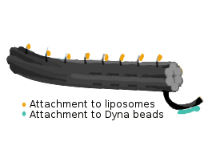

1 DNA Origami Folding
1.1 6HB Folding Reaction
Materials:
- DNA LoBind eppendorf tubes
- Folding buffer (12 mM MgCl2 + 5 mM TE)
- MiliQ water
- DNA Origami folding protocol was derived from Gür et. al. to fold the 6HB design.
- 8064 bp long scaffold strand along with staple strands were used in a ratio of 1:10.
- These staple strands included:
- Core staple strands
- Handle sequences for the attachment of liposomes
- For attachment to magnetic beads: biotinylated oligo

- The following mixture was prepared for the folding of 6HB (400 µl) and placed in a thermal cycler:
|
MiliQ H2O |
TE buffer |
MgCl2 |
Scaffold |
Handle Staples |
Core Staples |
Capture Oligo |
| Stock Concentration |
- |
50 mM (10x) |
120 mM |
100 nM |
4.16 µM |
704 nM |
1000 nM |
| Final Concentration |
- |
5 mM (1x) |
12 mM |
10 nM |
100 nM |
100 nM |
100 nM |
| Volume (μL) |
173.6 |
40 |
40 |
40 |
9.6 |
56.8 |
40 |
1.2 Annealing protocol
Materials:
- DNA LoBind eppendorf tubes
- Thermal cycler (Biorad C1000 Touch)
Procedure
- Heating up to 80°C
- Cooling to 65°C at the rate of 1°C per minute
- Once at 65°C, lower the temperature to 20°C at the rate of 1°C per 20 minutes
- Cool down to 4°C
- The DNA origami can be stored at this temperature in DNA LoBind tubes
2 Modification of 6HB
Materials needed:
- 1.5 mL Eppendorf tubes
- Pipettes
- Pipette Tips
- 1M tris(2-carboxyethyl)phosphine (TCEP)
- Single-stranded DNA 5'ThioMC6-D/TTTTTTTCTTTGTTTCTTT
- Liquid nitrogen
- Biotin-maleimide
- MilliQ Water
- N-Methyl-2-pyrrolidone (NMP)
- 0.1 mM KH2PO4 (Potassium Dihydrogen Phosphate) buffer
- Vortex mixer
- Centrifuge
- Sample Rotator
- Ultra Performance Liquid Chromatography (UPLC) machine
- Mass Spectrometer
- Speed vacuum
Procedure:
- Ensure that all Eppendorf tubes and pipette tips are all low-bind and low-retention respectively
- Pipette 200 μL of 100 μM ssDNA for modification
- Prepare a three-fold excess of 1 M TCEP
- Dilute the TCEP sample to 1:100
- Add 6 μL of TCEP to the DNA
- Let the sample incubate at room temperature for 30 minutes
- Dissolve 1 mg of biotin-maleimide in 1 mL NMP
- Add 90.3 μL of dissolved biotin-maleimide and add it to the DNA
- Check the pH of the sample and make sure it is approximately 7.2
- Add 10 μL of 0.1 mM potassium dihydrogen phosphate buffer at a time until pH reaches 7.2
- Place sample in a rotator overnight
- Run UPLC and Mass Spectrometry on a 10μL aliquot of the sample
- If product is obtained, purify the sample using High Performance Liquid Chromatography (HPLC) and place the sample in a speed vacuum set at 0.1 mbar
3 Purification
3.1 Agarose Gel Electrophoresis
Materials:
- 1 kb ladder (GeneRuler 1 kb Plus DNA Ladder, Thermo Scientific)
- DNA grade agarose
- SYBR® Safe DNA Gel stain (Life technologies)
- 10x TBE
Procedure:
- 0.75 % Agarose gel was prepared for the purification of DNA-origami
- Take 0.9 g of Agarose in a Sybr-safe beaker
- Add 6 ml of 10x TBE buffer
- Add remaining water to make the total volume 120 ml
- Microwave for 3-3:30 min
- Add 1.2 ml of 1.2 mM MgCl2 (Tip: Try to pour it on the sides of the beaker to minimize the temperature difference)
- Use 12 µl of the dye (Sybr Safe) and add it to the beaker (in a spiral fashion)
- Slowly pour the solution in the cast with a comb and use a pipetting tip to move any bubbles aside
- Let the gel cool for about 20-30 minutes
3.2 Amicon Filtration
Materials:
- 1x Folding Buffer (12 mM MgCl2, 1x TE)
- 100 kD Amicon filter
Procedure:
- Amicon filtration was performed to get rid of the excess staples after the folding reaction
- Incubate amicon filters with 1xFB overnight
- Wash with 1xFB twice at 14x G for 2 minutes
- Add 50 µl sample + 400 µl 1xFB, centrifuge for 2 minutes at 14x G
- Wash 6 times with 450 µl FB
- Invert and run at 1x G for 2 minutes
- High concentration was achieved and almost no staple strands were remaining after purification
3.3 Magnetic Bead Purification
Materials:
- Pierce Streptavidin Magnetic Beads (Thermo Fisher-Pierce)
- DynaMag™-2 Magnet (Thermo Fisher-Scientific)
- Washing buffer (1x PBS, 12 mM MgCl2), 0.5% TWEEN
Procedure:
- Biotinylated staple strands were used to bind the DNA-origami to streptavidin functionalized magnetic beads
- This method was used to remove excess staples and streptavidin in the 6HB solution
- Mix together the magnetic beads and biotinylated 6HB with impurities
- Let the mixture incubate overnight in a shaker
- Wash the beads after placing them on a magnetic stand to remover the unbounded impurities using the washing buffer
- Add 200 nM of the displacement staples and incubate for one hour while mixing gently
- Recover the 6HB by placing the eppendorf on the magnetic stand
4 Quantification of DNA-Origami
- The concentrations of the purified DNA origami structures were determined by measuring the absorbance at 260 nm using a spectrophotometer (Implen NanoPhotometer® P360)
- Value generated by photometer: mass concentration (µg/ml)
- Molar concentration of the sample can be measured by knowledge of the scaffold length (8064 bp in this case) and mass of one bp (660 g/mol)
- Thus, molar concentration = mass concentration (µg/ml) / (8064 * 660 g/mol)
5.2 TEM Imaging
- Plasma etching (SPI Plasma Prep™ III Plasma Etcher) was performed on carbon-coated copper grids (Plano GmbH)
- 10 µL of sample was placed on each grid for 5-10 min and then absorbed on kimtech wipes
- The samples containing DNA were stained with 4 µl of 2% uranyl acetate (+ 25 mM sodium hydroxide) for 90 seconds before removing it again.
- The grids were alloweed to dry for 15 minutes and placed in the grid holder for storage
5.2 Cryo-TEM
- For frozen hydrated specimen preparation, 2µl of sample was deposited on a holey carbon support film attached to a copper grid.
- The liquid film was thinned by blotting for 0.5 sec and frozen rapidly in liquid ethane.
- After rapid freezing, the sample was loaded to a Gatan cryo transfer holder keeping temperature below -130°C in order to prevent ice crystallization.
- TEM inspection was done in ZEISS LIBRA 120, energy filtered images were recorded under low dose electron irradiation conditions.
- Samples were kept below -130°C during the inspection